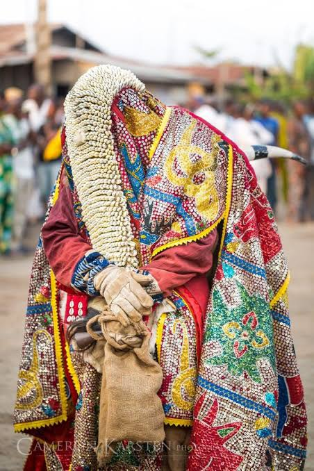
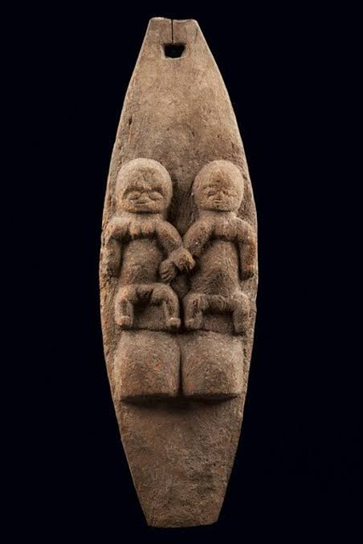
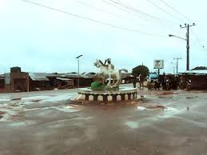

Sango
Remembering Sango through thunder, courage, drums, dance and the Yoruba traditions of leadership and justice.
The historic gateway welcoming all residents, visitors, and descendants to the peaceful town of Ipapo, Oyo State.
Connecting our people through trusted local journalism, 24/7 live community radio, youth empowerment, cultural heritage, and civic dialogue across Ipapo and to the world.
Designed specifically for the civic development, information, and cultural unity of Ipapo descendants everywhere.
Stream live audio broadcasts, cultural music, talk shows, and morning briefs from Ipapo studio anywhere in the world.
Get real-time updates on township infrastructure, chieftaincy affairs, local politics, markets, and education.
Celebrate our monarch Kabiyesi Oba of Ipapo, our historic Abuwe black soap craft, masquerade festivals, and traditions.
Direct access to FLDG Ipapo scholarships, FIPSU forums, sports tournaments, and student empowerment programs.
Discover the stories, symbols and celebrations that connect Ipapo to the wider Yoruba cultural world.
Remembering Sango through thunder, courage, drums, dance and the Yoruba traditions of leadership and justice.
Honouring ancestral presence through masquerade, music, movement, colour and community gathering.
Celebrating Omo Sanda as part of Ipapo identity, family memory, local storytelling and cultural continuity.
A growing community archive for the celebrations, rituals and stories that keep Ipapo's identity alive.
Ancestral remembrance through masquerade, music, dance, colour and family gathering. It honours those who came before and brings families together in shared memory.

A solemn traditional observance connected with communal order, respect, protection and reflection. Its customs encourage discipline, responsibility and respect for the wider community.

A celebration of courage, justice, thunder, drumming and Yoruba heritage. Songs, movement and storytelling keep the values of bravery and fairness alive.
A place to document local stories, family traditions and the community meaning of Omo Sanda. It connects family memory, identity and cultural continuity across generations.

Ipapo's founding story should be preserved through the voices of elders, family histories, palace records and community archives.
We will document the first settlement accounts, founding families, migration routes, development of the quarters, traditional leadership and the people shaping Ipapo today. The final timeline should be reviewed by elders, historians and community associations before publication.
Share a Family History →Click any photograph to instantly project it onto the background carousel.


Fresh Oyo, Itesiwaju and Ipapo stories fetched from our news feed.
Loading latest stories...